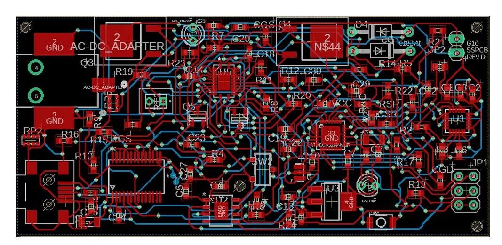
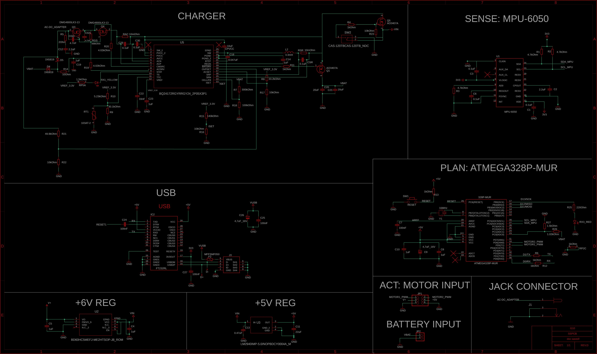

Progetto · Concluso · Lavoro di gruppo, solo elettronica
Steady Spoon: l’elettronica di un cucchiaio che compensa il tremore
Progetto di gruppo del corso di Biodesign (UCBM, a.a. 2024–2025): un cucchiaio per persone con malattia di Parkinson che legge il tremore della mano e inclina la punta in senso opposto con due servomotori. Io mi sono occupato solo dell’elettronica: la scheda (PCB) da 84 × 39 mm che legge il sensore di movimento, comanda i motori e gestisce batteria e ricarica. Meccanica, motori, analisi dei dati e firmware sono lavoro del resto del gruppo.

In breve
Il problema. Il tremore del Parkinson fa cadere il cibo prima che arrivi alla bocca. Il cucchiaio misura il movimento della mano e muove la punta nel verso opposto per tenerla ferma.
Il mio ruolo. L’elettronica: scelta di sensore, microcontrollore, batteria, regolatori di tensione e caricabatterie, poi schema e disegno della scheda in Eagle.
Il risultato. Una scheda da 84 × 39 mm senza errori nel controllo delle regole di disegno, con un costo di 28,42 € (componenti e produzione stimata). Il report però non descrive una scheda realizzata né misure: è un progetto su carta. Rileggendo schema e distinta ho trovato diversi errori: tre li ho già corretti, gli altri sono descritti nella sezione «Dove è fragile».
Scheda tecnica
| Origine | Progetto di gruppo (8 persone), corso di Biodesign, UCBM, a.a. 2024–2025; mio contributo: elettronica |
|---|---|
| Obiettivo | Compensare il tremore della mano durante il pasto, con un dispositivo leggero, lavabile e sotto i 100 $ |
| Sensore | MPU-6050 (giroscopio e accelerometro a 3 assi) collegato via I²C; letture a 50 Hz, perché il tremore misurato arriva a circa 23 Hz |
| Microcontrollore | ATmega328P a 16 MHz, con due uscite PWM per i servomotori; interfaccia USB-seriale FT232RL per caricare il programma |
| Alimentazione | Due celle Li-ion 18650 in serie (7,4 V, 2200 mAh); regolatori a 5 V (LM2940) e 6 V (BD60HC5); ricarica da alimentatore a 9 V con BQ24172 |
| Autonomia calcolata | Circa 1 h 37 min al consumo massimo (1354 mA) |
| Scheda | 84 × 39 mm · 2 strati · 86 componenti · 193 via · 4 fori di fissaggio · nessun errore nel controllo del disegno (DRC), 50 avvisi dello schema accettati |
| Costo | Scheda 28,42 € (componenti 24,70 € + produzione stimata 3,72 €); cucchiaio completo 72,41 € (stime del gruppo) |
| Strumenti | Autodesk Eagle (schema e scheda); distinta componenti da Farnell |
Cosa ho fatto io
Scegliere il sensore e il microcontrollore
Dai dati sul tremore dei pazienti il movimento più veloce era a circa 23 Hz, quindi servono almeno 46 misure al secondo. Ho scelto il sensore MPU-6050, che misura rotazioni e accelerazioni, ed è piccolo (4 × 4 mm) e consuma 3,9 mA. Il microcontrollore è l’ATmega328P, quello dell’Arduino: per leggere il sensore a 50 Hz bastano 7000 bit al secondo, e ho impostato 9600.
Dimensionare l’alimentazione
Ho sommato i consumi di tutti i componenti: 1 A per il servo alla punta, 330 mA per l’altro, 15 mA per l’interfaccia USB e 9 mA per il microcontrollore, in totale 1354 mA. Con il 20 % di margine la batteria deve dare almeno 1,7 A. Ho scelto due celle 18650 in serie invece di una batteria da 7,4 V, che è più grande e non entrava nel disegno meccanico. Servono due regolatori: 5 V per microcontrollore, USB e secondo servo; 6 V per il servo alla punta. Il sensore prende i suoi 3,3 V dall’interfaccia USB, così non serve un terzo regolatore.
Progettare la ricarica
Il caricabatterie BQ24172 carica le celle in tre fasi e sceglie da solo se alimentare il sistema dalla batteria o dall’alimentatore. Le sue impostazioni si fissano con le resistenze: 300 kΩ e 100 kΩ per fermare la carica a 8,4 V, 140 kΩ e 10 kΩ per una corrente di circa 1,1 A (mezzo C, come indica la scheda tecnica delle celle), un condensatore da 33 nF per il timer di sicurezza, che scade dopo circa tre ore. Un LED giallo mostra lo stato della carica.
Disegnare la scheda
Sono partito dai componenti dell’Arduino Nano che servivano e ne ho aggiunti altri. I condensatori stanno vicino ai chip che alimentano, per ridurre il rumore. Sotto il jack di ricarica e i regolatori non passano piste, perché scaldano. Il sensore è lontano dal centro, sull’asse lungo, e allineato con l’indice, che il gruppo ha preso come riferimento per il movimento. Ci sono un interruttore, un LED giallo per la ricarica, un LED rosso che si accende sotto i 7 V e quattro fori per fissare la scheda al guscio.
Come è fatta la scheda

Dove è fragile
Ho riletto schema, scheda e distinta confrontandoli con i calcoli del report. I primi tre punti li ho corretti nello schema in Eagle; gli altri restano aperti e vanno risolti prima di far produrre la scheda. Il PDF del report qui sotto è la versione consegnata, prima di queste correzioni.
Corretto · Una resistenza sbagliata nel caricabatterie
Nello schema la resistenza RAC, che fissa il limite di corrente in ingresso del BQ24172, valeva 10 Ω, mentre nei miei calcoli doveva essere 10 mΩ. Con 10 Ω il limite sarebbe stato di pochi milliampere e la carica non sarebbe partita. L’ho corretta nello schema. Nella distinta il codice ordinato per la resistenza da 10 mΩ (RSR) resta quello di un resistore da 10 Ω: non l’ho ancora aggiornato.
Corretto · Valori non standard
I valori 65 kΩ e 33,5 kΩ del report non esistono in commercio e nella distinta erano diventati altri. Ora nello schema ci sono valori standard: R8 = 33,2 kΩ (limite d’ingresso di circa 3,8 A) e R15 = 140 kΩ (vedi il punto successivo).
Corretto · Ricarica troppo veloce e timer troppo corto
Il report prevedeva una ricarica a 2,2 A (1 C) in circa un’ora, con il timer di sicurezza impostato proprio a un’ora: a fine carica il timer avrebbe fermato il caricabatterie prima che le celle fossero piene. La scheda tecnica delle celle indica 0,5 C come corrente standard. Ora la corrente è di circa 1,1 A (R15 = 140 kΩ) e il timer, con C22 = 33 nF, scade dopo circa tre ore. Sono valori calcolati, non misurati.
Aperto · La batteria piena supera il limite di un regolatore
Ho dimensionato tutto sui 7,4 V nominali, ma a fine carica le due celle arrivano a 8,4 V, e con l’alimentatore collegato il sistema vede circa 9 V. Il regolatore a 6 V (BD60HC5) accetta in ingresso al massimo 8 V, come scritto nel mio stesso allegato. Per risolvere serve un regolatore con ingresso di almeno 10 V, e cambia anche l’impronta sulla scheda: per questo non l’ho corretto.
Aperto · La soglia del LED rosso
Il LED rosso avvisa che la batteria si sta scaricando, ma la soglia (7 V) sta nel firmware, che non è mio e non ho visto. Lo stesso regolatore a 6 V ha bisogno di almeno 6,9 V per dare 6 V, quindi con 7 V resta pochissimo margine: la soglia andrebbe alzata, a mio parere intorno a 7,3 V. È una stima, da verificare con una prova.
Aperto · Distinta e documenti non allineati
Lo schema usa il regolatore LM2940 in contenitore SOT-223, ma nella distinta il codice ordinato è quello in contenitore TO-220, che non entrerebbe nell’impronta disegnata. Il codice della resistenza da 10 mΩ rimanda a un resistore da 10 Ω, e anche due condensatori hanno una taglia diversa da quella disegnata. Il condensatore CPVCC (10 µF, 4 V) sta su una linea che arriva a 8,4–9 V e C13 (0,47 µF, 10 V) sulla linea d’ingresso: andrebbero scelti con tensione nominale più alta. L’allegato sulla scheda parla anche di un regolatore LM1117 che nello schema non c’è. Non ho corretto la distinta.
Aperto · Nessuna misura
Il report valuta il cucchiaio con un’autovalutazione del gruppo (77 su 90) e non riporta misure sulla scheda. Anche l’interruttore di accensione, secondo il report, va ancora completato. Quindi i numeri di autonomia e di ricarica sono calcoli, non risultati.
Come lo rifarei
Controllare valori e distinta in modo sistematico
Confrontare uno per uno valore, contenitore, tensione nominale e codice ordinato di ogni componente prima di ordinare, e usare solo valori standard. Gli errori sulle resistenze del caricabatterie li ho trovati solo rileggendo tutto a posteriori.
Fare i conti su tutto l’intervallo della batteria
Verificare ogni componente da 6 V a 9 V, non solo a 7,4 V: usare per i 6 V un regolatore a commutazione che accetti almeno 10 V in ingresso e spostare di conseguenza la soglia del LED rosso.
Costruire e misurare
Far produrre una prima scheda e misurare corrente assorbita, durata della carica e rumore del sensore con i servomotori accesi. Solo allora autonomia e tempo di ricarica diventano risultati.
Report
Estratto in inglese del report finale di gruppo (versione 4.0, gennaio 2025): la sezione sull’elettronica e sei allegati su scheda, caricabatterie, regolatori, batterie, microcontrollore e sensore. Il resto del report è lavoro di gruppo e non è incluso. È la versione consegnata, prima delle correzioni descritte sopra (dice ancora ricarica in un’ora e i valori originali).